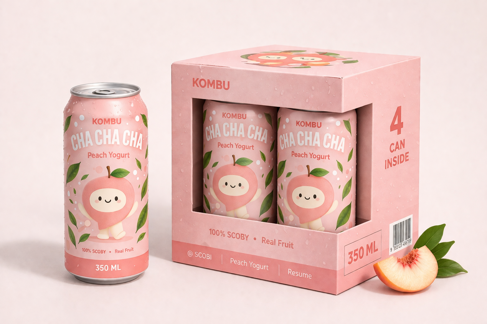
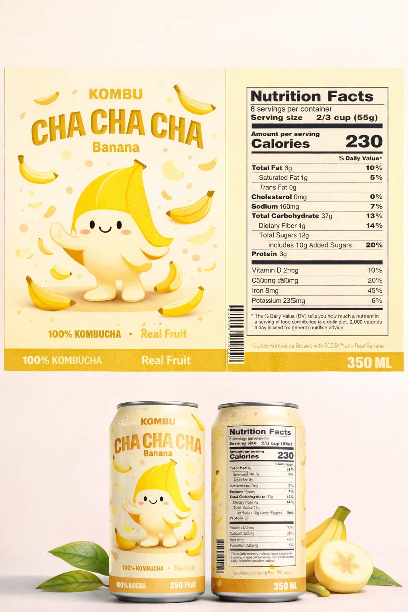

← All projectsKombu
PACKAGING / CHARACTER DESIGN / Independent concept
Kombu
Cha Cha Cha
A bright, fruit-forward identity that brings personality, colour, and a little joy to the kombucha aisle.

01 / The story
Beyond the
ordinary.
THE CHALLENGE ↘
Many kombucha brands communicate health through serious minimalism. This system needed to remain fresh and natural while creating more joy and shelf impact.
THE SOLUTION ↘
Expressive fruit mascots, soft colour families, and bold curved typography form a scalable system across cans, labels, and multipacks.
02 / Creative direction
“Naturally refreshing. Unapologetically playful.”
03 / Visual world
A brand you can
feel.



NEXT PROJECT ↗
Aura ↗